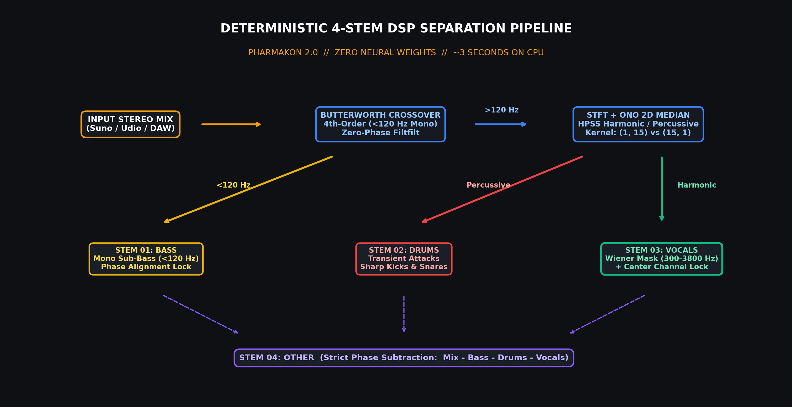
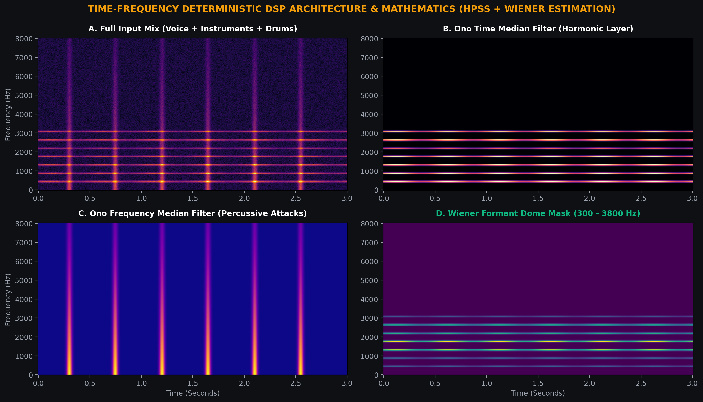

Modern stem demixing has predominantly migrated to massive deep learning models (HTDemucs, MDX23, BS-Roformer). While they achieve impressive results in offline studio environments, their real-world production footprint introduces heavy friction:
The primary headache for producers working with generative audio (Suno v3.5/v4, Udio 1.5) is acoustic bleed: rhythm and lead guitars aggressively leak into the vocal stem because distorted electric guitar overtones share the exact same critical frequency zone as human vocal formants: 300 – 3800 Hz.
Does clean vocal and rhythm extraction truly demand a multi-gigabyte server cluster? No. By leveraging classical time-frequency geometric distribution and inter-channel statistical coherence, stem demixing executes via pure deterministic mathematics in ~3 seconds on a standard laptop CPU.

In PHARMAKON 2.0, stem separation operates as a zero-phase pipeline across the Short-Time Fourier Transform (STFT) complex plane:
Prior to any time-frequency STFT decomposition, the stereo signal passes through a steep 4th-order Butterworth crossover. All acoustic energy below 120 Hz is consolidated into a pure True-Mono stream: M = 0.5 * (L + R). This guarantees 100% mono punch and eliminates subwoofer phase cancellation on club sound systems.
The mid-high spectrum is decomposed into spectrogram magnitudes. A 2D directional median filter is applied:

In professional mixing, lead vocals are placed dead-center in the stereo panorama. We calculate the inter-channel coherence index to isolate the phantom center, then apply a smooth Wiener formant dome covering 300 Hz to 3800 Hz. Hard-panned instruments and off-axis frequencies are cleanly attenuated.
The residual harmonic layer is computed via strict phase-null subtraction:
Summing all 4 stems reconstructs the master file with exact floating-point precision to 0.0 dB without phase distortion!
| Metric | PHARMAKON 2.0 Pure DSP | Deep Neural Models (Demucs / UVR5) |
|---|---|---|
| Processing Speed | ~3 Seconds (Full 3-4 min song) | 45 – 120 Seconds (High Latency) |
| Download Footprint | 0 MB (Embedded DSP algorithm) | 2 – 6 GB PyTorch Model Checkpoints |
| Hardware Requirement | Standard Laptop CPU | High-End CUDA / Apple Silicon GPU |
| Transient Preservation | Crisp, punchy drum attacks | Blunted transients & smeared attacks |
| Artificial Artifacts | Zero Neural Hallucinations (Deterministic) | Diffusion warble & underwater chirping |
Free Standalone Console (PHARMAKON 2.0):
For rapid stem demixing and offline mastering with zero Python installation:
👉 Download PHARMAKON 2.0 Portable (.exe) (139 MB)
Professional Real-Time DAW Plugin (PHARMAKON PRO):
For zero-latency sample-accurate DAW integration inside Cockos REAPER, Ableton Live, Logic Pro, and FL Studio, discover the commercial C++20 edition PHARMAKON PRO featuring dual 60 FPS CRT oscilloscopes (Launching Tuesday).